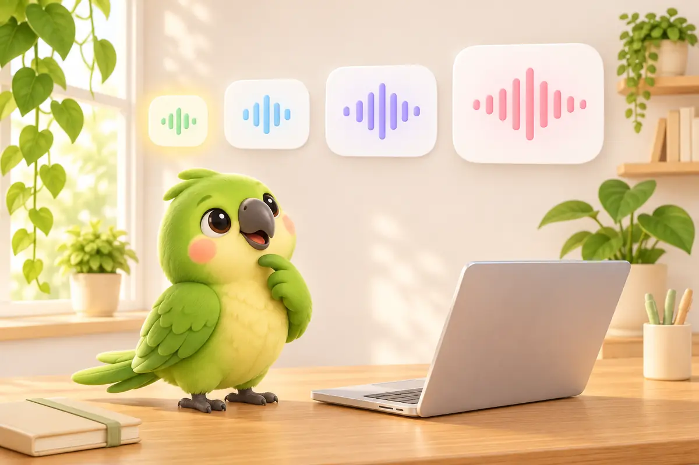
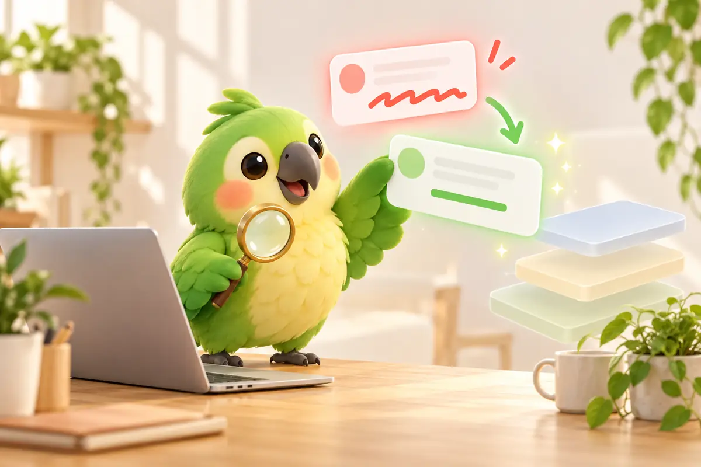
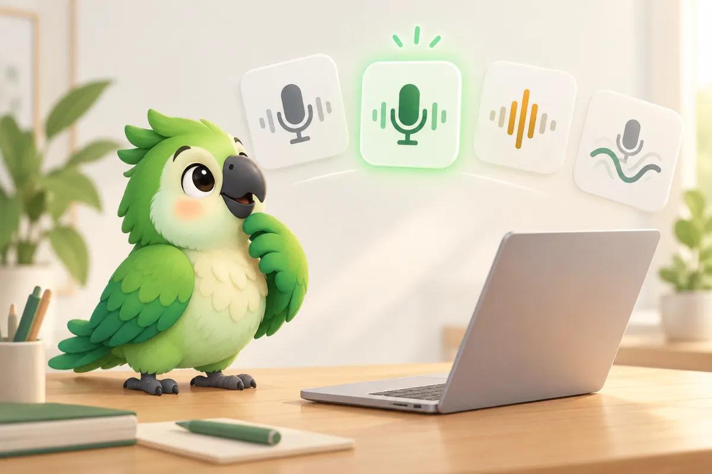
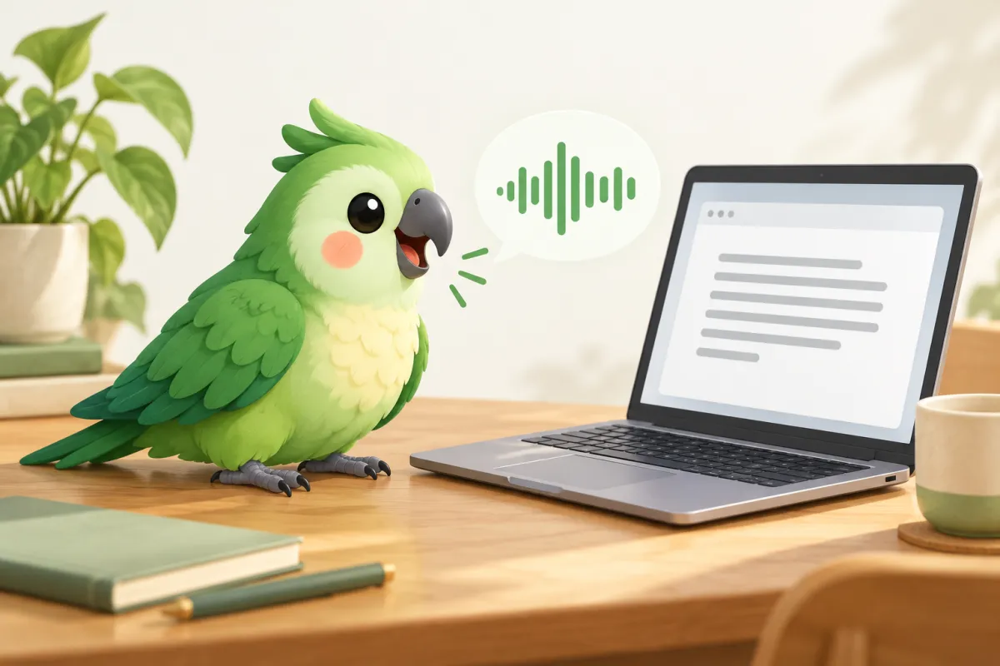

用 iPhone 相机扫描学舌鸟 iPhone 键盘 · ¥38 买断
用 iPhone 相机扫描学舌鸟 iPhone 键盘 · ¥38 买断Parroting Journal
Mac 使用技巧与效率工具
从真实使用场景出发，分享语音输入、文字沟通和 Mac 工作方法。
iPhone · 2026-11-08
学舌鸟 iPhone 版上架，登上 App Store 生产力工具付费榜第 1 名
学舌鸟 iPhone 版上架后登上台湾区 App Store 生产力工具付费榜第 1 名。整理 iPhone 语音键盘怎么用、和免费 Mac 版怎么透过 iCloud 共用词典与改写格式，以及购买前要知道的限制。
阅读全文 →
Mac · 2026-11-05
Mac 本机语音识别模型怎么选？SenseVoice、Qwen3-ASR、Breeze-ASR、Whisper 比较
Mac 离线语音输入该选 SenseVoice Small、Qwen3-ASR、Breeze-ASR-25 还是 Whisper？比较文件大小、速度、中文错字率与台湾华语、中英夹杂表现，并教你用 2 分钟朗读录音测自己的声音。
阅读全文 →
Mac · 2026-11-02
语音输入一直打错人名和术语？从词典到专属语音模型的三层解法
语音输入老是把同几个词打错？拆解个人词典、语气提醒本机微调、专属语音模型（SenseVoice LoRA）三层做法各修得了什么、修不了什么，附开发者实测错字率与踩过的坑。
阅读全文 →
Mac · 2026-10-31
Typeless 平替：7 款 Mac 语音输入对比（免费、本地处理、中文）
想找 Typeless 的平替或替代？对比 Wispr Flow、Superwhisper、VoiceInk、Handy、OpenWhispr、macOS 听写与学舌鸟的价格、中文支持、本地处理与隐私。
阅读全文 →
Mac · 2026-10-27
Mac 中文语音输入怎么用？从系统听写到 AI 整理与翻译
Mac 中文语音输入实用教程：系统听写、快捷键粘贴、口语整理、中英翻译、语气提醒及个人词典。
閱讀全文 →